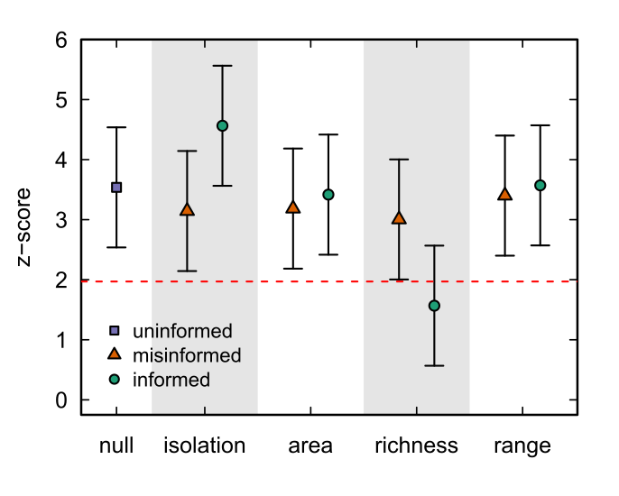

<div class="container">
<div class="d-flex flex-column justify-content-center">
    <div class="row justify-content-center" id="profile-col">
        <div class="col-sm-12 text-justify">
            <p class="gran">
Null models have become a crucial tool for understanding structure within incidence matrices across multiple biological contexts. In this work, we combine the classic concept of a null model and the ideas underlying joint modeling in community ecology. In particular, we develop correlation-informed null models that flexibly incorporate biologically relevant information as an ingredient for the null hypotheses to test the influence of such factors on the structure of biological data.
        </p>
            
        </div>
    </div>
</div>
</div>

